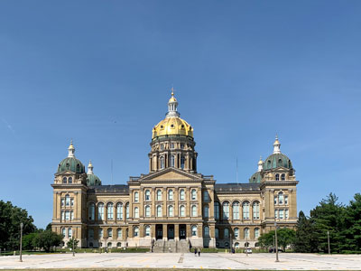
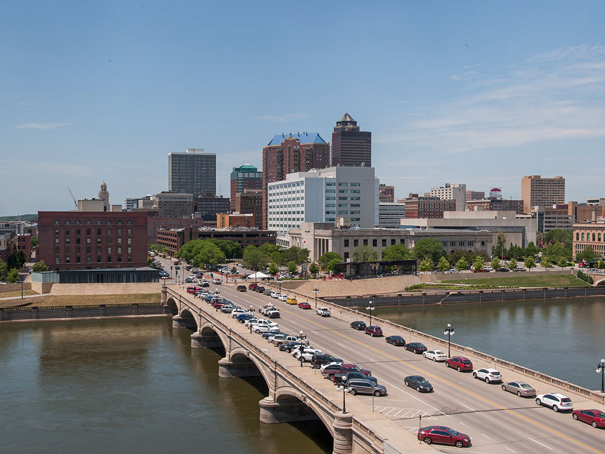
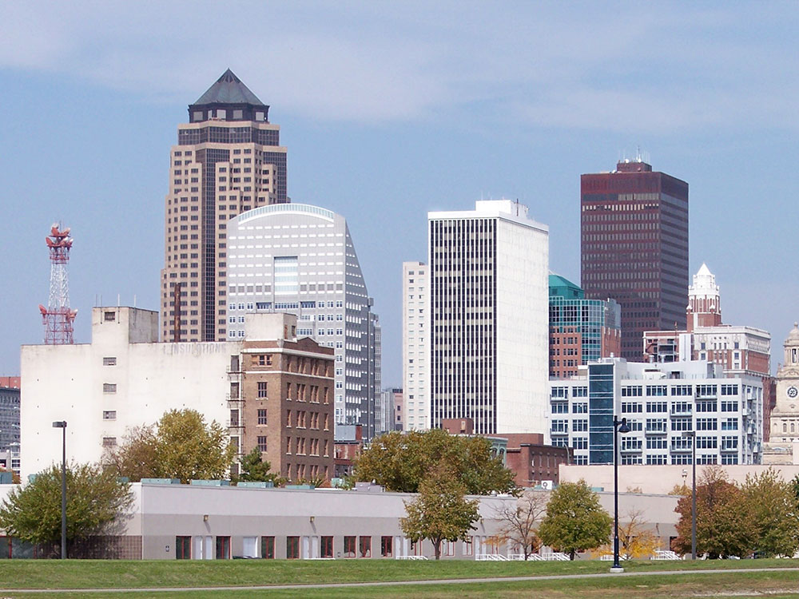
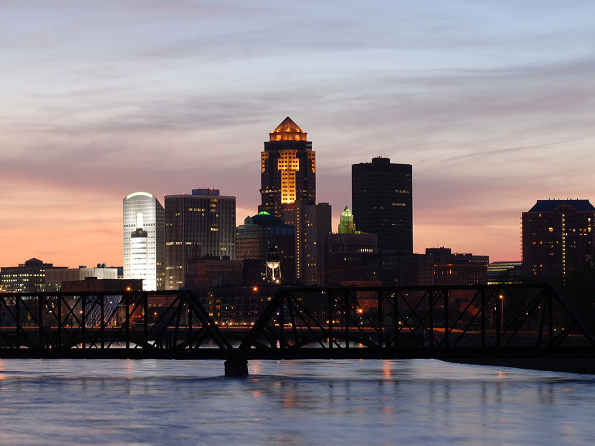

Kansas City Travel Guide
Major metropolitan center known for its barbecue, jazz heritage, professional sports teams, and diverse economy.
Places to See in Kansas City

Danksergeant15, CC BY-SA 4.0, via Wikimedia Commons; Image Size Adjusted

Airline History Museum
Aviation museum featuring restored aircraft and exhibits that document the history of commercial aviation
Danksergeant15, CC BY-SA 4.0, via Wikimedia Commons; Image Size Adjusted
American Jazz Museum
Museum dedicated to preserving and celebrating the history, artistry, and cultural influence of jazz through interactive exhibits, artifacts, recordings, and live performances.
Danksergeant15, CC BY-SA 4.0, via Wikimedia Commons; Image Size Adjusted
Arabia Steamboat Museum
Museum displaying one of the world's largest collections of pre-Civil War artifacts recovered from a remarkably preserved nineteenth-century steamboat wreck.
Danksergeant15, CC BY-SA 4.0, via Wikimedia Commons; Image Size Adjusted
City Market
Historic public market, operating since 1857 and featuring over 140 vendor stalls offering fresh produce, global cuisine, and specialty goods
Danksergeant15, CC BY-SA 4.0, via Wikimedia Commons; Image Size Adjusted
Crown Center
85-acre shopping, dining, and entertainment complex in downtown Kansas City that includes retail shops, restaurants, theaters, hotels, and the headquarters of Hallmark Cards
Danksergeant15, CC BY-SA 4.0, via Wikimedia Commons; Image Size Adjusted
Ewing and Muriel Kauffman Memorial Garden
Two-acre botanical garden featuring formal landscaping, seasonal floral displays, and the final resting place of the Kauffmans.
Danksergeant15, CC BY-SA 4.0, via Wikimedia Commons; Image Size Adjusted
Fort Osage National Historic Landmark
Aviation museum featuring restored aircraft and exhibits that document the history of commercial aviation
Danksergeant15, CC BY-SA 4.0, via Wikimedia Commons; Image Size Adjusted
Harry S. Truman National Historic Site
Site preserves the longtime residence and personal belongings of the 33rd U.S. president, offering insight into his family life and post-presidency years.
Danksergeant15, CC BY-SA 4.0, via Wikimedia Commons; Image Size Adjusted
Harry S. Truman Presidential Library and Museum
Presidential archive and museum that documents the life, presidency, and legacy of Harry S. Truman through exhibits and historical collections.
Danksergeant15, CC BY-SA 4.0, via Wikimedia Commons; Image Size Adjusted
Kansas City Automotive Museum
Aviation museum featuring restored aircraft and exhibits that document the history of commercial aviation
Danksergeant15, CC BY-SA 4.0, via Wikimedia Commons; Image Size Adjusted
Kansas City City Hall
29-story Art Deco government building that houses municipal offices and features an observation deck offering panoramic views.
Danksergeant15, CC BY-SA 4.0, via Wikimedia Commons; Image Size Adjusted
Kansas City Museum
Multidisciplinary museum housed in a historic mansion, showcasing exhibitions and programs focused on the city’s history, culture, and community.
Danksergeant15, CC BY-SA 4.0, via Wikimedia Commons; Image Size Adjusted
Katy Trail State Park
Popular lakeside recreation area featuring sandy beaches, wooded trails, birdwatching opportunities, and scenic dune landscapes overlooking Lake Michigan.
Danksergeant15, CC BY-SA 4.0, via Wikimedia Commons; Image Size Adjusted
Kauffman Center for the Performing Arts
Modern performing arts venue featuring two main halls and serving as home to the Kansas City Ballet, Symphony, and Lyric Opera.
Danksergeant15, CC BY-SA 4.0, via Wikimedia Commons; Image Size Adjusted
Kemper Museum of Contemporary Art
Museum showcasing modern and contemporary works by national and international artists, along with rotating exhibitions and public programs.
Danksergeant15, CC BY-SA 4.0, via Wikimedia Commons; Image Size Adjusted
Loose Park
75-acre urban park featuring a rose garden, lake, walking trails, and historical markers from the Civil War.
Danksergeant15, CC BY-SA 4.0, via Wikimedia Commons; Image Size Adjusted
Missouri Town Living History Museum
Open-air museum with over 25 original structures from the 1820s to 1860s, interpreted by costumed staff to depict 19th-century frontier life.
Danksergeant15, CC BY-SA 4.0, via Wikimedia Commons; Image Size Adjusted
National Frontier Trails Museum
History museum dedicated to the pioneers who traveled the Santa Fe, Oregon, and California Trails, featuring artifacts, diaries, and exhibits.
Danksergeant15, CC BY-SA 4.0, via Wikimedia Commons; Image Size Adjusted
National Museum of Toys and Miniatures
Houses one of the largest collections of antique toys and fine-scale miniatures in the world.
Danksergeant15, CC BY-SA 4.0, via Wikimedia Commons; Image Size Adjusted
National World War I Museum and Memorial
United States’ official museum dedicated to World War I, featuring extensive exhibits, artifacts, and a memorial tower.
Danksergeant15, CC BY-SA 4.0, via Wikimedia Commons; Image Size Adjusted
Nelson-Atkins Museum of Art
Art museum known for its extensive Asian art collection and iconic shuttlecock sculptures.
Overview
Kansas City, Missouri, is the largest city in Missouri by area and the center of a bi-state metropolitan area that spills across the Missouri River into Kansas. It is famous for its barbecue, its jazz heritage, its more than 200 fountains, which give it the nickname "City of Fountains," and for the Kansas City Chiefs and Royals. The city sits at the junction of the Missouri and Kansas Rivers, where the Santa Fe, Oregon, and California Trails began for many pioneers heading west.
Visitors come to Kansas City for slow-smoked burnt ends and ribs at restaurants such as Arthur Bryant's and Joe's Kansas City, for jazz at the American Jazz Museum and the clubs of 18th & Vine, and for world-class museums such as the Nelson-Atkins Museum of Art and the National WWI Museum and Memorial. They also come for the Country Club Plaza, Union Station, Crown Center, and the Power & Light District, and for football and baseball games, and the city is friendly and a good value.
History
French fur traders arrived in the area in the 1700s, and the Town of Kansas was founded in 1838 on a bluff at the great bend of the Missouri River, where it became a major outfitting point for wagon trains heading west on the Santa Fe, Oregon, and California Trails. The city was incorporated in 1853 and grew with the railroads and meatpacking in the late nineteenth century. In the 1920s and 1930s, under the political boss Tom Pendergast, the city had a thriving nightlife where jazz musicians such as Count Basie, Charlie Parker, and Lester Young developed the Kansas City style. Kansas City is also the home of Hallmark Cards, founded in 1910, and in recent years the downtown has been revitalized with the Power & Light District and the Kauffman Center.
Sightseeing and Popular Landmarks
Union Station, an elegant Beaux-Arts railway station from 1914, has a science center, a restaurant, and events, and Crown Center is a shopping and entertainment complex built by Hallmark. The Nelson-Atkins Museum of Art, with its giant shuttlecock sculptures on the lawn, is a landmark, and the National WWI Museum and Memorial has a tower with a view of the city. Other sights include the Kauffman Center for the Performing Arts, the City Hall Art Deco observation deck, City Market, and the Arabia Steamboat Museum.
Culture and Museums
The Nelson-Atkins has a large collection of Asian and European art and free admission, and the Kemper Museum of Contemporary Art is also free. The American Jazz Museum and the Negro Leagues Baseball Museum share a building in the 18th & Vine district, and the National Museum of Toys and Miniatures, the Kansas City Museum, the Money Museum, and the TWA Museum are among the smaller museums. In Independence, the Truman Presidential Library and the Truman National Historic Site are a short drive away.
Parks
Kansas City has more than 200 parks. Loose Park is known for its rose garden and its role in the Civil War Battle of Westport, and Penn Valley Park has views of the downtown skyline and the Liberty Memorial. The Kauffman Memorial Garden is a formal garden, and Swope Park, one of the largest city parks in the country, includes the Kansas City Zoo. The Katy Trail and the Riverfront Heritage Trail are good for walking and biking, and Missouri Town 1855 is a living history site east of the city.
Sports
Kansas City is a major sports city. The Kansas City Chiefs of the NFL play at Arrowhead Stadium and have won several Super Bowls, including in 2020, 2023, and 2024, and the Kansas City Royals of Major League Baseball play at Kauffman Stadium and won the World Series in 2015. Sporting Kansas City of Major League Soccer play at Children's Mercy Park in Kansas City, Kansas, and the Kansas City Current of the NWSL play at CPKC Stadium, the first stadium built for a women's professional team.
Seasons and Weather
Kansas City has a humid continental to humid subtropical climate. Summers are hot and humid, with highs in the upper 80s°F, and winters are cold, with highs in the 30s and 40s°F and about 18 inches of snow. Spring and fall are the most pleasant seasons, and severe thunderstorms and the occasional tornado are possible in spring and early summer.
This article uses material from Wikipedia as well as information from official tourism and institutional sources. Key references include Visit KC, Nelson-Atkins Museum of Art, National WWI Museum and Memorial, American Jazz Museum, Kansas City Chiefs, Kansas City Royals, and National Weather Service Kansas City. Wikipedia material is from the articles "Kansas City, Missouri" and "History of Kansas City, Missouri", and is available under the Creative Commons Attribution-Share-Alike License 3.0.

.jpg){kind=link}


